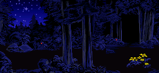
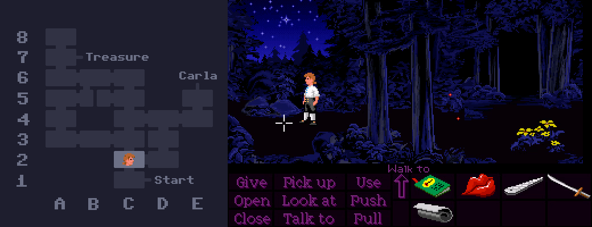

If you've ever gone looking for a full map of Mêlée Island's forest, there's a good chance you've come across this one, which has been floating around on the internet for a long time.
While it works for finding your way around, the layout certainly looks pretty confusing. It's a bit of a spaghetti mess with paths going all over the place and connections that don't seem to make any sense.
However, the layout is actually a lot more logical than this map would suggest.
If we assume the weird directions come from the camera angle changing, rather than the path itself, then the layout actually looks more like this!

Turns out it's a perfectly self-consistent grid! Considering how the forest can be so disorienting that people sometimes think it's randomly generated like the catacombs, I doubt anyone playing through the game normally would ever pick up on this. It's a pefect example of developers putting a lot of work into something that no one's going to notice.

By the way, I'll be using this coordinate system to make it easier to follow which rooms I'm talking about from now on. With that said let's look at some weird stuff in the forest!
In room A5, there's a mysterious pile of bones. It's not too difficult to find, but it's not on the path to either Carla's house or the treasure, which means you'll never see it unless you wander off the beaten track.

Interestingly, while skulls and corpses are a common sight on Monkey Island, I think this pile of bones is the only instance of human remains to be found anywhere on Mêlée.
When the Storekeeper is in the forest, he stays in one room at a time and waits for you to enter the same room before moving to the next one, regardless of whether you've gone off course or not in the meantime. This means if you decide to go the long way around, it's possible to go in a loop and come at the Storekeeper from the opposite direction! Nothing special happens, unfortunately - he just walks straight past Guybrush without a care in the world.